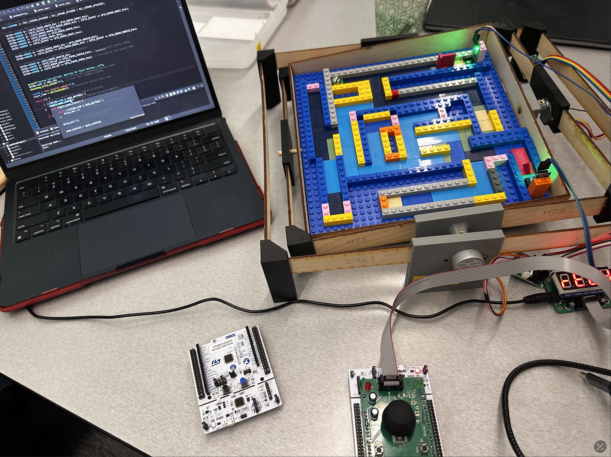
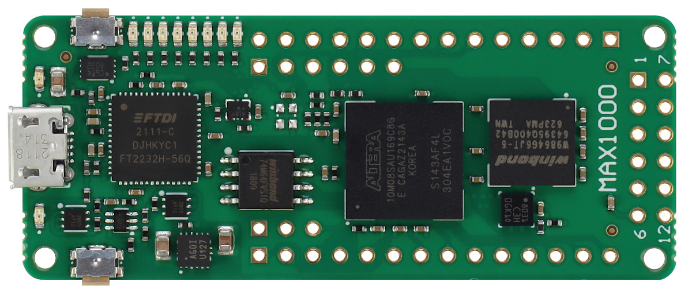
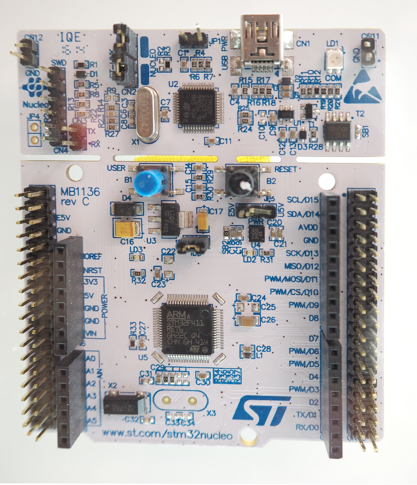
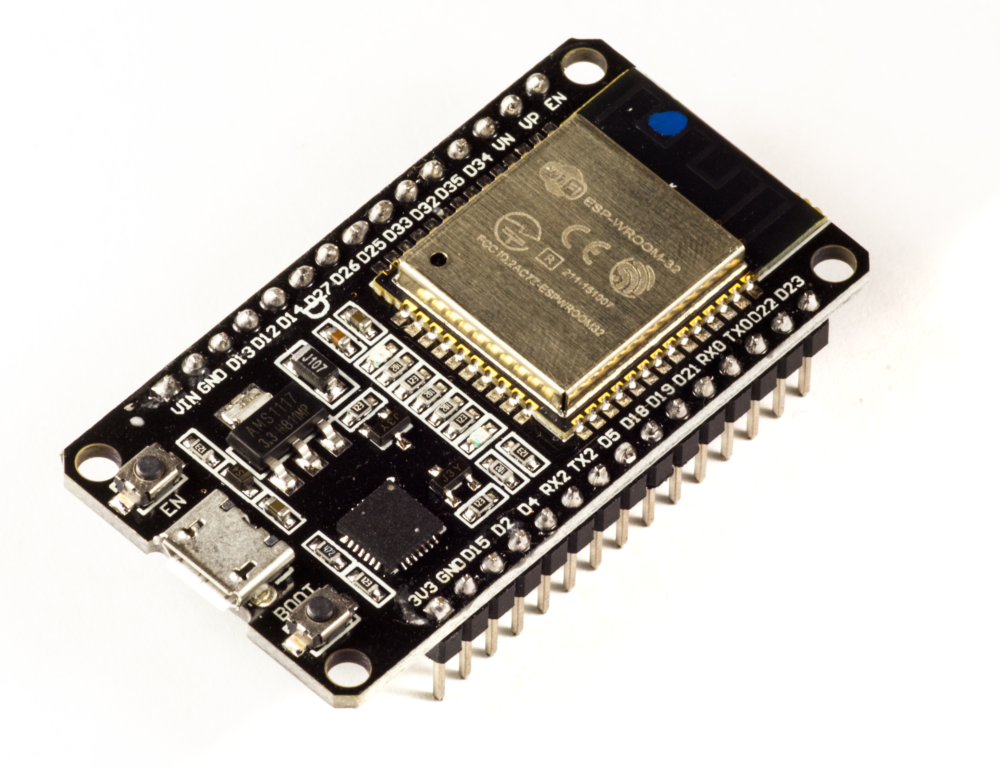
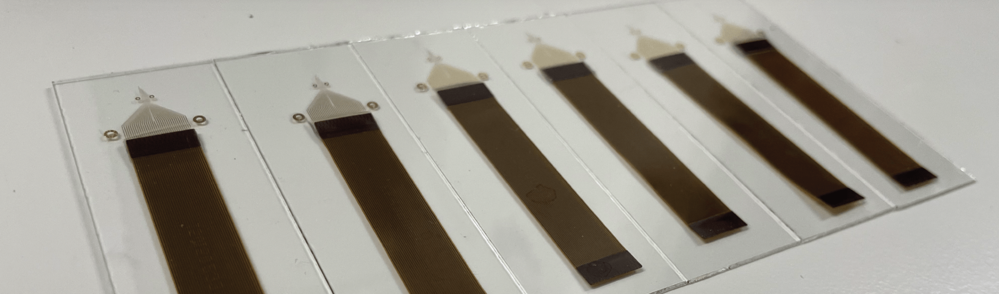
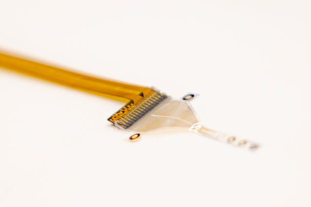
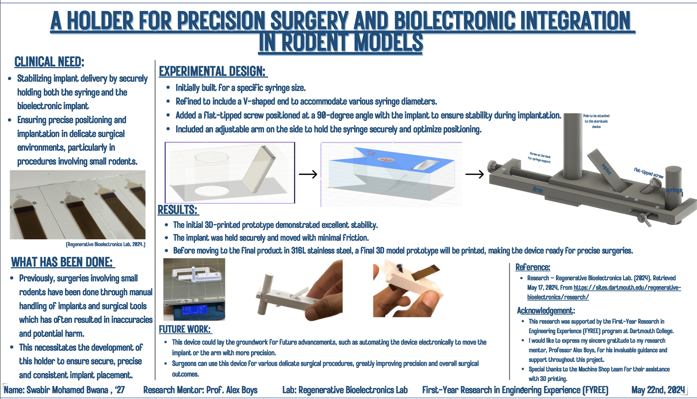

I write software and embedded firmware. Some weeks that means shipping a full-stack web platform with frequent production releases; other weeks it's writing interrupt-driven C on an ARM microcontroller and profiling latency down to the microsecond. Computer engineer at Dartmouth, currently recruiting for New Grad Roles.
About Me
I'm a junior at Dartmouth studying Engineering Sciences with a Computer Science focus. My work splits between two worlds: building full-stack web applications that ship to real users, and writing firmware for microcontrollers with real-time constraints. I don't really separate the two — the best engineers I've seen are comfortable on both sides.
I led a 4-person team to build SwipePlate — a campus food delivery platform with a React/TypeScript frontend, a Node/Firebase backend, and a live delivery tracking map — zero to deployed in 6 weeks. That same term I was writing interrupt-driven C on an STM32 for the embedded systems lab. That's a normal week for me.
Outside building things, I'm a CS10 Teaching Assistant (OOP in Java), was a TA for ENGS 28 Embedded Systems, and spent a summer teaching Python to Kenyan scholars through KenSAP. Teaching is how you find out if you actually understand something.
What I Work With
From Linux kernel-level debugging to Webpack builds. I've shipped across the full chain.
What I've Built
Led a 4-person team from idea to deployed product in 6 weeks. SwipePlate lets Dartmouth students order from all 4 dining halls and have meals delivered by other students. I built both repos: a React/TypeScript frontend with live map tracking via React Leaflet and Framer Motion transitions, plus a Node/Express backend with Firebase Firestore handling users, wallet balances, and the full order lifecycle. We had frequent production releases throughout — this wasn't a demo, it ran on real campus data from Dartmouth's dining API.
A Netflix-style streaming platform with live data from the TMDB API. Full TV season and episode browsers, "Continue Watching" history via localStorage, Top 10 ranked content with numbered badges, skeleton loading states, and a fully responsive mobile UI. Deployed on Render.
A complete three-component web search engine written in C from scratch. The crawler does BFS across web pages using hashtable-backed URL deduplication. The indexer builds an inverted index mapping every word to per-document frequency counts with O(1) lookups. The querier handles boolean AND/OR queries with correct operator precedence (AND binds tighter than OR, matching real search behavior) and ranks results by summed frequency. Built on a custom memory-safe data structures library — bag, set, counters, hashtable — every allocation validated with valgrind. CS50 at Dartmouth.
Match with classmates by course, study style, and availability. Real-time "Study Now" broadcasts via Socket.io, JWT auth, a reliability reputation system, and Google Calendar sync. React frontend, Node/Express backend, MongoDB with Mongoose.
26 simultaneous players plus a spectator over a custom UDP protocol. The server owns all game state — map layout, player positions, gold distribution. Each client is a terminal sending keypresses and receiving live ncurses frames. Line-of-sight visibility recomputed per player on every move. Written entirely in C.
Global street food recipes with full CRUD. React Router v7 Data Mode — loaders pre-fetch per route, actions handle form submissions, router auto-revalidates after writes. Zustand manages UI state: search, filters, sort order, and an edit draft so canceling doesn't blow away the original.
Cross-platform mobile app (iOS, Android, Web) built with React Native and Expo. Audio playback, haptic feedback, AsyncStorage persistence, and stack navigation. Tested on Expo Go.

A physical tilt-to-navigate LEGO marble maze running on STM32C031C6TX (ARM Cortex-M0+). Joystick ADC input drives 2 NEMA stepper motors to tilt the platform; a 30-second I²C countdown display adds pressure. I designed the full state machine (Waiting → Idle → Running → Finished), interrupt-driven finish-line sensors on PA5/PA6, and a 200-unit ADC deadzone to cut joystick noise without killing responsiveness. Motor latency under 10ms with the interrupt architecture — you can see the STM32 board and joystick wired up in the photo above.

Synthesized a quantized neural network into actual hardware on an FPGA using Vitis HLS (C to RTL). Integrated the IP block into Vivado alongside the ARM processor core over AXI bus, wrote the C driver, then optimized throughput with loop unrolling and HLS pipelining (II=1). Tracked the bottleneck shifting from the accelerator to memory bandwidth as I removed each constraint — LUT/FF/BRAM/DSP profiled at each step.

Full TinyML lifecycle end to end: collected 3-axis motion data via SPI accelerometer, trained a classifier in Python (TensorFlow), converted weights to C arrays, deployed inference on STM32. Measured accuracy, latency in clock cycles, and flash/RAM footprint on real hardware — the resource-constrained reality check that most ML courses skip.

Wrote an interrupt-driven SPI accelerometer driver from scratch — chip fires an interrupt on new data, no polling. Separately programmed an ESP32-C3 as a BTLE-to-UART wireless bridge, so a UART device talks wirelessly without knowing anything about BTLE. Combined GPIO, USART, ADC, SPI, and interrupts in one integrated multi-peripheral system.
Bare-metal startup from scratch: linker script, startup code that copies .data from flash to RAM and zeros .bss, interrupt vector table — before main() runs. Then quantized a neural network with zero floating-point: float32 weights to int8 with scale factors, sigmoid replaced with a lookup table. The speed difference when you remove FPU emulation is dramatic.

Designing bioelectronic implants that eliminate gold electrodes entirely — replacing them with PEDOT:PSS, which is both conductive and body-compatible. Standard PEDOT:PSS-on-gold devices delaminate under cyclic stimulation. My work involves fabricating fully polymeric devices using photolithography, spin-coating, parylene-C CVD, and RIE, then characterizing with EIS and CIC testing. Manuscript in preparation. Lab: Regenerative Bioelectronics Lab, Dartmouth (Prof. Boys).
Designed in SolidWorks and Fusion 360 — a holder for stabilizing both syringe and bioelectronic implant during rodent microsurgeries. V-shaped end for multiple syringe sizes, 45° flat-tipped screw for implant stability, adjustable arm. 3D-printed prototype worked. Next version in 316L stainless steel.

Sealed connector systems for implanted devices — resisting enzymatic activity, immune response, fluid infiltration, and mechanical disconnection. Shrink-wrap tubing filled with PDMS, heat-treated for compression and polymerization. Tested electrical performance and fluid infiltration in simulated physiological conditions. URAD-funded, supervised by Prof. Boys.
Where I've Worked
Teaching, research, building, and mentoring — across the lab, the classroom, the machine shop, and two summers.
Where I Study
Dartmouth's Engineering Sciences program is hardware, software, circuits, dynamics, and materials all in one degree. The CS modification adds algorithms, systems programming, and software design on top. The result is that I think like an engineer when I write code, and like a programmer when I design hardware — and I've actually tested both sides in real projects.
Publications & Lab Work
Replacing metallic electrodes in bioelectronic implants with PEDOT:PSS — a conductive polymer that's both electrically active and body-compatible. Standard PEDOT:PSS-on-gold devices fail through delamination under cyclic stimulation. By eliminating the metal interface, the implant has better mechanical compliance with soft tissue, lower immune response risk, and more stable long-term performance. I'm doing the full microfabrication workflow: photolithography, spin-coating, parylene-C CVD, RIE etching, and characterizing with EIS and CIC testing under repeated stimulation cycles. Supervised by Prof. Alex Boys, Regenerative Bioelectronics Lab, Dartmouth. Manuscript in preparation.
Through the E.E. Just internship (Summer 2024), I analyzed survey data from the Pediatric Hand Study Group to quantify global participation in pediatric hand surgery — cleaning data, running statistical analysis, building a world map of countries visited by members and a summary statistics table. The paper was accepted and presented at the 45th SICOT Orthopaedic World Congress in Spain (2025).
📄 SICOT 2025, Spain · Accepted & PresentedSealed connector systems for long-term implanted devices — shrink-wrap tubing filled with PDMS, heat-treated for compression and polymerization. Tested electrical performance and fluid infiltration under simulated physiological conditions. URAD-funded, supervised by Prof. Boys.
🔬 URAD · Dartmouth Bioelectronics LabDesigned a holder for stabilizing both syringe and bioelectronic implant during rodent microsurgeries. The 3D-printed prototype demonstrated excellent stability and minimal friction. Next version in 316L stainless steel. Poster presented at FYREE, May 2024.

The Human Part
I grew up in Mombasa, Kenya — coast kid, not capital city. That background gives me a different default frame for what "normal" is, and I think it makes me ask better questions.
I tend to be the person who won't let a question go until I understand it from the bottom. Not just "how does this work" — but "why was it built this way, and what do we lose if it was built differently." Annoying in group projects. Very useful when debugging.
I spent a genuinely embarrassing amount of time once thinking about why a cow is called a cow and not a goat. Like, who was the first person who looked at that animal and made that sound? And why did everyone else agree? This is the kind of question my friends tolerate, and it's also exactly why I'm decent at root cause analysis.
When I'm Not Coding
Let's Talk
Whether it's a software role, firmware position, research collaboration, or just a conversation — I respond fast.